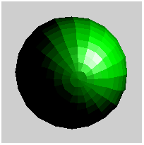
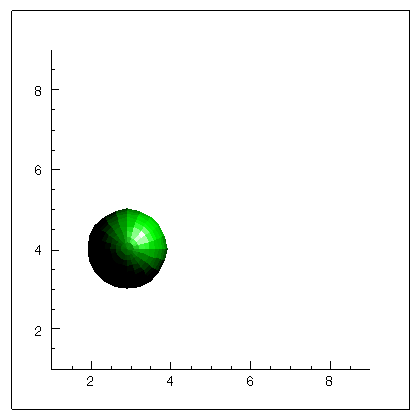

A printer object represents a hardcopy graphics destination. When a printer object is created, the printer device to which it refers is the default system printer. To change the printer, utilize the printer dialogs (see DIALOG_PRINTJOB and DIALOG_PRINTERSETUP .)
Note: Objects or subclasses of this type can not be saved or restored.
None
See IDLgrPrinter::Init .
Objects of this class have the following properties. See IDLgrPrinter Properties for details on individual properties.
In addition, objects of this class inherit the properties of all superclasses of this class.
This class has the following methods:
In addition, this class inherits the methods of its superclasses (if any).
The following example demonstrates the process of printing the contents of an IDL graphics display object (a buffer or a window) to an IDLgrPrinter object. The resolution of the printed page is based on the resolution of the screen. The model object in the printer object must be scaled to maintain the same size as displayed on the screen. The location of the view must also be changed to center the display on the page.
PRO PrintingAnImage
; Determine the path to the "convec.dat" file.
convecFile = FILEPATH('convec.dat', $
SUBDIRECTORY = ['examples', 'data'])
; Initialize the parameters of the image with the file.
convecSize = [248, 248]
convecImage = BYTARR(convecSize[0], convecSize[1])
; Open the file, read in the image, and then close the
; file.
OPENR, unit, convecFile, /GET_LUN
READU, unit, convecImage
FREE_LUN, unit
; Initialize the display objects.
windowSize = convecSize
oWindow = OBJ_NEW('IDLgrWindow', RETAIN = 2, $
DIMENSIONS = windowSize, $
TITLE = 'Earth Mantle Convection')
oView = OBJ_NEW('IDLgrView', $
VIEWPLANE_RECT = [0., 0., windowSize])
oModel = OBJ_NEW('IDLgrModel')
; Initialize the image object with its palette.
oPalette = OBJ_NEW('IDLgrPalette')
oPalette->LOADCT, 27
oImage = OBJ_NEW('IDLgrImage', convecImage, $
PALETTE = oPalette)
; Add image to model, which is added to the view, and
; then the view is displayed in the window.
oModel->Add, oImage
oView->Add, oModel
oWindow->Draw, oView
; Determine the centimeter measurements of the image
; on the screen.
oWindow->GetProperty, RESOLUTION = screenResolution
windowSizeCM = windowSize*screenResolution
; Initialize printer destination object.
oPrinter = OBJ_NEW('IDLgrPrinter', PRINT_QUALITY = 2, $
QUALITY = 2)
; Obtain page parameters to determine the page
; size in centimeters.
oPrinter->GetProperty, DIMENSIONS = pageSize, $
RESOLUTION = pageResolution
pageSizeCM = pageSize*pageResolution
; Calculate a ratio between screen size and page size.
pageScale = windowSizeCM/pageSizeCM
; Use ratio to scale the model within the printer to the
; same size as the model on the screen.
oModel->Scale, pageScale[0], pageScale[1], 1.
; Determine the center of the page and the image in
; pixels.
centering = ((pageSizeCM - windowSizeCM)/2.) $
/pageResolution
; Move the view to center the image.
oView->SetProperty, LOCATION = centering
; Display the view within the printer destination.
oPrinter->Draw, oView
oPrinter->NewDocument
; Cleanup object references.
OBJ_DESTROY, [oPrinter, oView, oPalette]
END
The following example positions a view containing an orb object in the center of a page when it is printed. Centering the view is a common task. Using this example as a guideline, you can easily adapt it to meet your own needs.
PRO center_doc
; Define dimensions in centimeters (cm).
dims = [5.0, 5.0]
; Create a view with centimeters as units. Add the view to a model.
oView = OBJ_NEW('IDLgrView', $
UNITS=2, $
VIEWPLANE_RECT=[-dims[0]/2, -dims[1]/2, dims[0], dims[1]], $
ZCLIP=[MAX(dims), -MAX(dims)], EYE=MAX(dims)+1, $
COLOR=[200,200,200])
oModel = OBJ_NEW('IDLgrModel')
oView->Add, oModel
; Create an orb object and add it to the model.
oOrb1 = OBJ_NEW('orb', COLOR=[0,255,0], SHADING=1, $
STYLE=2, HIDDEN=0)
oModel->Add, oOrb1
; Make radius 40% of window width.
oModel->Scale, dims[0]*0.4, dims[0]*0.4, dims[0]*0.4
oModel->Rotate, [1,1,0], 10
; Create a light and add it to the model.
oLight = OBJ_NEW('IDLgrLight', TYPE=1, LOCATION=[1.5,1.5,2])
oModel->Add, oLight
; Create a printer object, setting centimeters as the units.
oPrinter=OBJ_NEW('IDLgrPrinter', UNITS=2)
; Retrieve the drawable area of the page in the pagesize
; variable and use this to position the view.
oPrinter->GetProperty, DIMENSIONS=pageSize
centering = ((pageSize - dims)/2.)
oView->SetProperty, LOCATION=centering, DIMENSIONS=dims
; Print the view.
oPrinter->Draw, oView, VECTOR=1
OBJ_DESTROY,[oPrinter]
OBJ_DESTROY,[oView]
END
The following figure shows a subset of the output. The orb is positioned in the center of a printed page when you run this example.
|
 |
The following example creates a model and draws some IDLgrAxis objects to the printer in vector mode. It then creates a second model for an orb object and plots the orb, drawing it to the printer in bitmap mode. The entire view is centered in the page, as shown in the previous example. However, this example precisely positions the orb and axes within the view using data units (defined as centimeters).
PRO center2_doc
; Set the view dimensions in units of centimeters (cm).
viewDims = [10.0, 10.0]
; Set the orb origin in cm, relative to the lower left
; corner of the view.
orbLoc = [3.0, 4.0]
; Set the Orb radius in cm.
orbRadius = 2.2
; Create the Orb object.
; The Orb object creates a unit orb with a default radius of 1.
oOrbModel = OBJ_NEW('IDLgrModel')
oOrb = OBJ_NEW('orb', COLOR=[0,255,0], SHADING=1, STYLE=2)
oOrbModel->Add, oOrb
; Create axes model. Create and position the axis objects.
oAxesModel = OBJ_NEW('IDLgrModel')
oX = OBJ_NEW('IDLgrAxis', 0, RANGE=[1,viewDims[0]-1], $
/EXACT, LOCATION=[orbLoc[0]-orbRadius, 1])
oAxesModel->Add, oX
oY = OBJ_NEW('IDLgrAxis', 1, RANGE=[1, viewDims[1]-1], $
/EXACT, LOCATION=[1, orbLoc[1]-orbRadius])
oAxesModel->Add, oY
; Add a box to show view extent.
oAxesModel->Add, OBJ_NEW('IDLgrPolygon', $
[0, viewDims[0], viewDims[0], 0], $
[0, 0, viewDims[1], viewDims[1]], STYLE=1)
; Create the view using the previously defined dimensions.
oView = OBJ_NEW('IDLgrView', $
UNITS=2, VIEWPLANE_RECT=[0, 0, viewDims[0], viewDims[1]], $
ZCLIP=[MAX(viewDims), -MAX(viewDims)], EYE=MAX(viewDims)+1, $
COLOR=[255,255,255])
oTopModel = OBJ_NEW('IDLgrModel')
oView->Add, oTopModel
; Add a light.
oLight = OBJ_NEW('IDLgrLight', TYPE=1, LOCATION=[1.5,1.5,2])
oTopModel->Add, oLight
; Set up printer to print user-requested view. Center
; entire printer output in the page.
oPrinter=OBJ_NEW('IDLgrPrinter', UNITS=2)
oPrinter->GetProperty, DIMENSIONS=pageSize
centering = ((pageSize - viewDims)/2.)
oView->SetProperty, LOCATION=centering, DIMENSIONS=viewDims
; Print view containing axes in vector mode then remove model.
oTopModel->Add, oAxesModel
oPrinter->Draw, oView, VECTOR=1
oTopModel->Remove, oAxesModel
; Now float the orb into the view and print it in bitmap mode.
oTopModel->Add, oOrbModel
oView->SetProperty, VIEWPLANE_RECT = $
[-orbRadius, -orbRadius, 2 * orbRadius, 2 * orbRadius], $
LOCATION=[orbLoc[0]-orbRadius,orbLoc[1]-orbRadius]+centering, $
DIMENSIONS=[2*orbRadius, 2*orbRadius]
oPrinter->Draw, oView, VECTOR=0
; oPrinter->NewDocument
OBJ_DESTROY,[oPrinter]
OBJ_DESTROY,[oView]
END
The following figure shows a subset of the output. The entire plot area is positioned in the center of a printed page when you run this example.
|
 |
|
5.0 |
Introduced |
|
6.2 |
Added QueryRequiredTiles method Added PRINTER_NAME property and revised NAME property |
| 8.2 | Added LINE_QUALITY property |